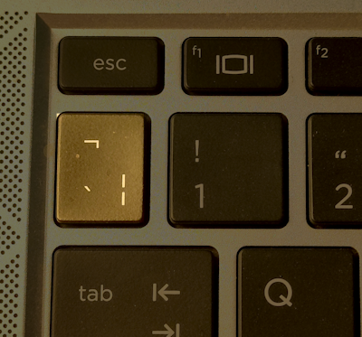
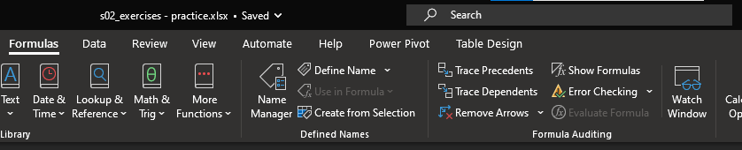
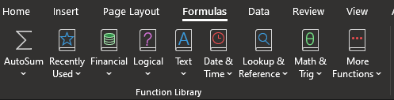
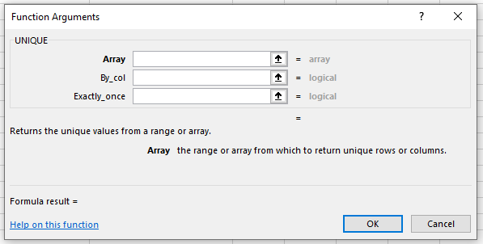

No feedback found for this session
Excel foundations 2
excel
intermediate
Excel skill-builder
This is a session in our intermediate-level Excel skill builder course. This consists of five practical training sessions, designed to be taken together, that are aimed at helping users with some prior Excel experience build and consolidate their skills. The sessions are:
- Excel foundations 1
- Excel foundations 2 (this session)
- Lookups in Excel
- Excel programming
- Pivot tables and pivot charts
Session materials
Session outline
- most Excel questions can be broken down into these five areas
- Cells and formatting
- Ranges and tables
- References
- Formulas
- Functions
- we’ll look at formulas and functions in this session
Getting started
- files for today: +
s02_exercises.xlsxas a starting-point for the exercises today +s02_exercises_final.xlsxis the end-point
Task
- open the sample spreadsheet
s02_exercises.xlsxand have a look around - find the
service_useworksheet
Previously, on Building Excel Skills…
Task
- Please find an example of number formatting on this worksheet. How would you alter this using a keyboard shortcut?
- Try typing
Ctrl+1. What happens? - Find a table in the
service_useworksheet. How would you convert that table to a range? - Find an example of a cell reference. What does
$do in a reference? - Find a named object on that worksheet. How would you change a name?
Formulas
- most of the calculations that you do in Excel will be based on formulas
- e.g. references (like
=A2) are simple formulas - formulas are written in the formula bar
- you start a formula with an
=
Task
- Select a blank cell on the sheet
- Click in the formula bar and type
= - After the
=, type a simple sum (like2+2) - Press
Enterand see the result in the cell
Formulas
- let’s build a more interesting formula using
SUM() SUM()adds up the values of all the cells referenced inside the brackets
Task
- Click the cell next to Service A total
- Then in the formula bar enter
=SUM(B2:B14)
:lets you specify a range of cells- there are several other ways of doing this:
- you could write
SUM(B2, B3, B4, B5 .....) - if you select the range with the mouse, you might see your formula written as
=SUM(service_t[service_a])
- you could write
Formulas
Task
- Please populate
Service B totalandService C total - Can you figure out two ways of populating the
Grand totalvalue in the summary table?
Working with formulas
- formulas are the real power in Excel
- but they’re usually hidden in the background
Task
- Try pressing
Ctrl+ ` (backtick). What do you see?

- you can also access this view by selecting
Show Formulasbutton in the formulas section of the ribbon menu
Formula auditing
- Excel has lots of helpers for building functions
 - we’ll investigate these tools as we start writing our own functions today
Working with formulas
- let’s make a new column using sum to give us daily totals across the three services
Task
- Select the duty_manager column by clicking the column letter
- Right click and select insert (or
Ctrl+Shift++) - Name the column
daily_total - In the first cell in that column, use the sum function to add up the three service figures for that day
- Now use the fill handle to populate the empty cells in that
daily_totalcolumn - Finally, come out of the formula view (
Ctrl+ `)
MAX()
- now that we’ve used
SUM(), we can use another useful function:MAX() - this finds the maximum value in a specified range of cells
Task
- select the empty cell next to Peak daily load
- add a formula
=MAX(E2:E14)
About functions
- Excel has hundreds of different functions
- you can think of functions as the verbs of an Excel worksheet
Task
- Find the Function library
 - Try several new functions - and be ready to share the most interesting/surprising one with the group
Formula auditing
- both formulas and cell references get hard to pick out from data in more complicated workbooks
Task
- press
Ctrl+ ` (backtick) to open the formula auditing view
About functions
- four key bits of jargon: NAME, ARGUMENTS, SYNTAX, and RETURN
- each function has a name (like
MAX()) that describes what the function does - each function then has some arguments in the brackets after the name
- in the
MAX()example, our argument was the range of cellsE2:E14 - arguments control what the function works on
- in the
- each function has a syntax, which is how these arguments need to be arranged
- each function will return something
- in the
MAX()example, our returned value was the largest value found in that range
- in the
Function shortcuts and helpers
Ctrl+'copy-pastes the formula from the directly above verbatimCtrl+Dcopies the formula from the cell above. This version updates relative references, so is usually the better choice for copying formulasCtrl+Awhile typing the function name brings up the function argument interface
Ctrl+Shift+Awhile typing the function name brings up the arguments inline helpF3to paste names into functionsShift+F3to use the insert formula interface
Using functions together
- now that we’ve had a go with a couple of simple formulas, we should look at some more complicated formulas
- we want to count the number of shifts each manager did during the early part of January
- that takes a few steps, and a few functions
Using functions together
- we get a list of all the duty managers using
=UNIQUE(F2:F14)- note that this formula spills - so it returns several cell’s worth of information
- that’s unusual behaviour, and can cause trouble - watch out for
#SPILLerrors when Excel cannot fit the results into the desired location
- we count the shifts for each of those managers with
=COUNTIF($F$2:$F$14, C21) - then we calculate the busiest manager, and grab their name, using
=INDEX(C18:C21, MATCH(MAX(D18:D21), D18:D21))
Busiest day
Task
- Using a similar approach, can you give the date of the busiest day?
=INDEX(A2:A14, MATCH(B25, E2:E14)) - busiest day
Thank yous
I’m grateful to Jennifer Watt, John Mackintosh, Duncan Sage, David Coigach, Michael Robb, Angela Godfrey, Spela Oberstar, Andrew Christopherson, and other members of the KIND network for their valuable suggestions and corrections to these training materials